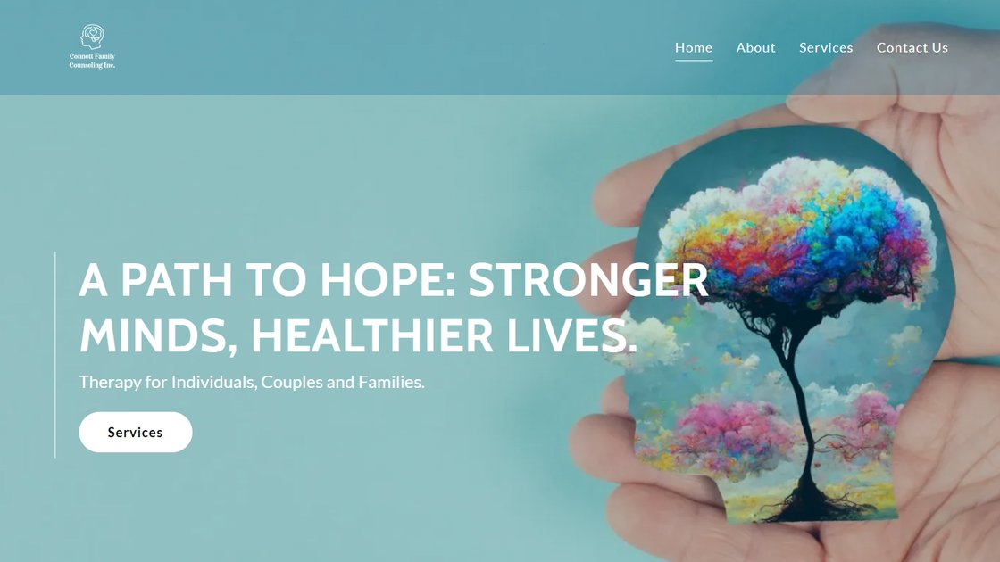
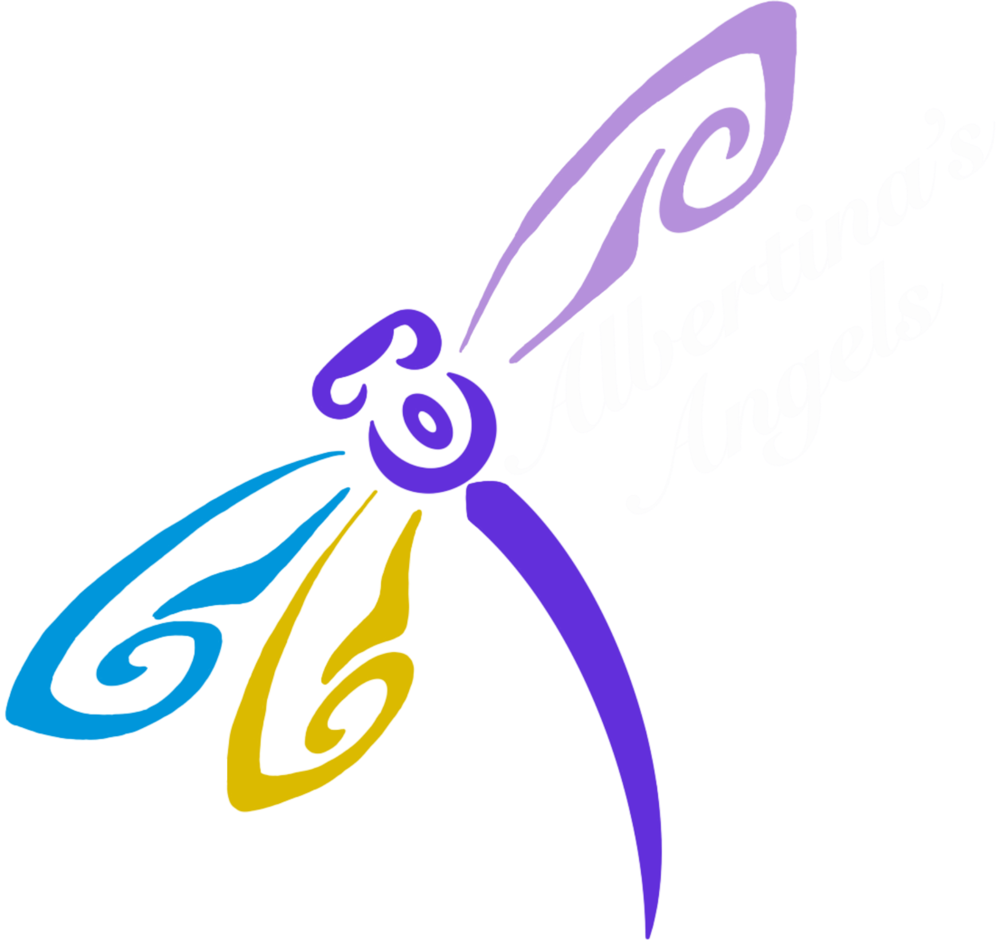

Available for full-time roles & freelance work
Good design is invisible until it's missing.
"Somewhere between collecting too many ideas and trusting the one that feels inevitable, that's where I do my best work."
Mark Pabustan
Selected work
A handful of projects, each one its own little puzzle.

Connett Family Counseling
Taking a private-practice therapist from zero online presence to a live site built to earn trust before it asks anything of an anxious visitor.
Live since 2025 · Freelance View case study
Albertina's Angels
A multi-year nonprofit project spanning brand identity, donor research, and iteration based on stakeholder testing.
Live since 2022 · Freelance View case studyBootcamp Projects
A handful of smaller projects from the Google UX Design Certificate and Columbia Engineering UI/UX Bootcamp, earlier reps, different muscles.
Case studies in progress View projectsLet's make something good.
Whether it's a full-time role, a freelance project, or just a conversation about design, my inbox is open.
mpabustan96@gmail.com